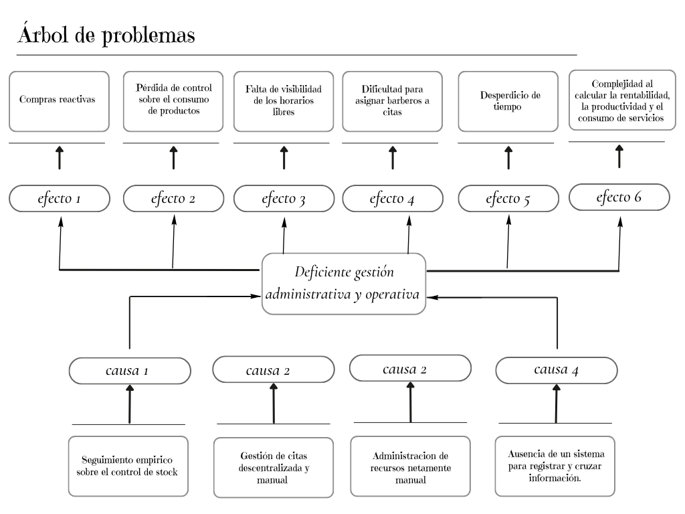
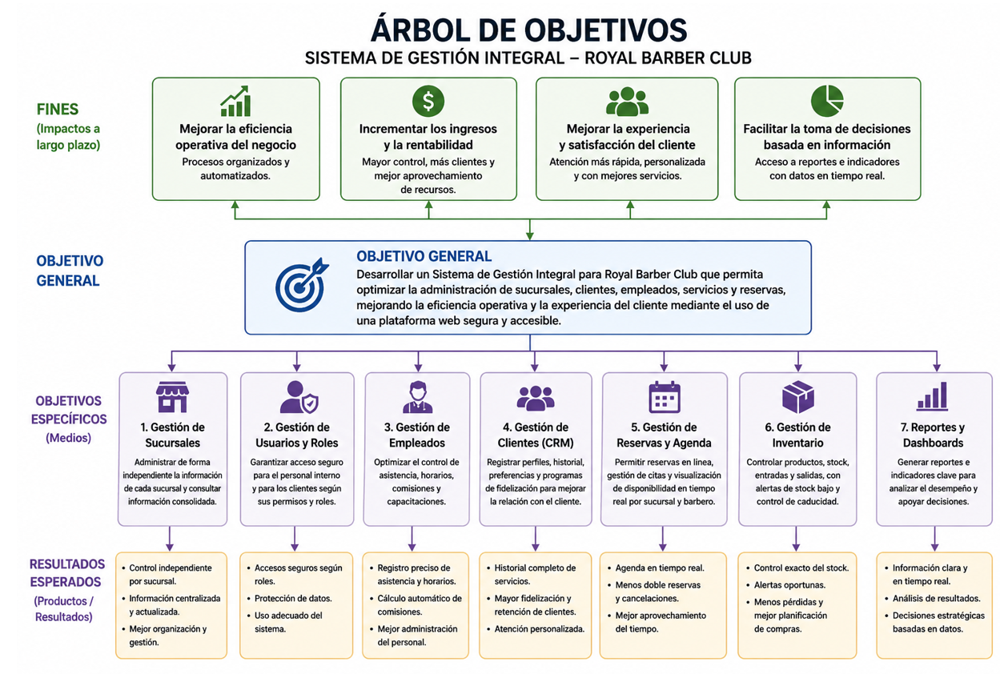
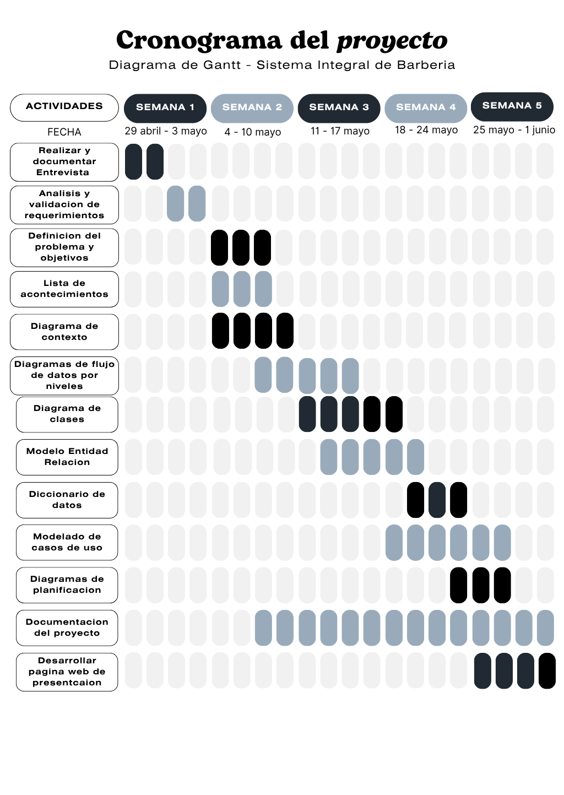
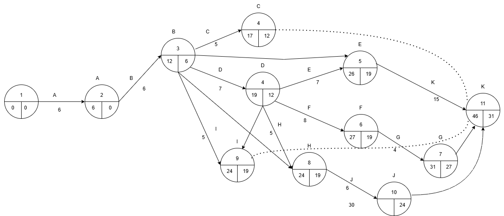

Sistema de Gestión Integral para Royal Barber Club
Royal Barber Club es una empresa de servicios de barbería con presencia en la ciudad de El Alto, La Paz, que opera actualmente con dos sucursales ubicadas en Senkata y Villa Adela. Fundada hace aproximadamente tres años y medio por Víctor Manolo Calle Sánchez, la empresa ha crecido hasta contar con un equipo de 10 barberos, todos formados en su propia academia. A pesar de este crecimiento, la gestión del negocio continúa realizándose de forma manual y empírica, apoyándose en herramientas informales como WhatsApp, registros en papel y hojas de cálculo, lo que genera pérdida de información, errores en liquidaciones y dificultades para controlar el inventario de manera eficiente. Ante esta problemática, el presente proyecto propone el desarrollo de un Sistema de Gestión Integral para Royal Barber Club, una plataforma web que centralice y automatice los principales procesos operativos, administrativos y financieros del negocio. El sistema abarcará módulos de gestión de citas, control de inventarios, cálculo de comisiones, administración de personal y generación de reportes, con el objetivo de digitalizar las operaciones de ambas sucursales y brindar al administrador información confiable y en tiempo real para la toma de decisiones.
Royal Barber Club cuenta actualmente con dos sucursales estratégicas (Senkata y Villa Adela) en la ciudad de El Alto, La Paz. Históricamente, la gestión de citas y el control de inventarios se han realizado mediante herramientas genéricas (WhatsApp y hojas de cálculo), lo que dificulta la consolidación de datos. La empresa no solo ofrece servicios de barbería, sino que también gestiona capacitaciones internas y seminarios (asociados a marcas como OLEUNBEATY), lo que añade una capa de complejidad operativa que las soluciones comerciales estándar no cubren satisfactoriamente para la realidad boliviana.
7.1. Justificación
7.2. Alcances
Problema Central: ¿De qué manera un sistema de información web centralizado optimizará la gestión administrativa, operativa y financiera en las sucursales de "Royal Barber Club"?
Problemas Secundarios:
Desarrollar un sistema de información web para la empresa "Royal Barber Club" que permitirá centralizar y automatizar la gestión operativa, el control de inventarios y la administración financiera de sus sucursales, reduciendo los errores humanos y optimizando el uso de la capacidad instalada.
Para el desarrollo del Sistema de Gestión Integral de Royal Barber Club, se emplearon los siguientes métodos de investigación:
Parte 1: Introducción y Datos del Dueño / Visión del Negocio
Parte 2: Información General del Negocio y Sucursales
Parte 3: Personal y Organización de Empleados
Parte 7: Inventario y Gestión de Productos


Usuarios Internos (Administrativo):
Usuarios Externos (Clientes):
Datos a guardar:

